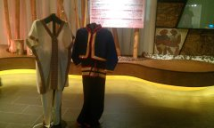

日月潭向山遊客中心

日月潭風景區管理處的向山遊客中心，為日月潭畔的新景點，也是遊客必到景點之一。該建築物由日本建築師團紀彥所設計，整體設計以融入原有地景為中心思想，斜坡式草皮可直通屋頂，以多種弧形從地面拉出所有空間，尋求與大自然的和諧，最特別的就是靠近日月潭的水池以無邊緣的設計讓池面與潭面融為一體。
日月潭風景區管理處的向山遊客中心，為日月潭畔的新景點，也是遊客必到景點之一。該建築物由日本建築師團紀彥所設計，整體設計以融入原有地景為中心思想，斜坡式草皮可直通屋頂，以多種弧形從地面拉出所有空間，尋求與大自然的和諧，最特別的就是靠近日月潭的水池以無邊緣的設計讓池面與潭面融為一體。

「自然人文館」以影音互動式導覽遊客認識日月潭的文歷史和自然景觀。房廳的中間是日月潭的立體地圖，可以一眼看清日月潭面目，也很有意思。週圍的展示則是著重在日月潭的自然景觀、歷史，與原住民的文化采風錄。